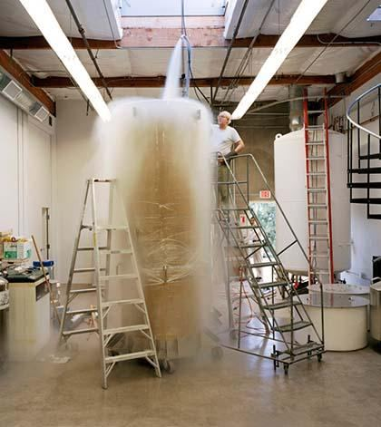

FIGURE 6.13: Cryonic Suspension

চিত্র 6_13 / Figure 6_13
চিত্র 6.13: ক্রায়োনিক সাসপেনশন
চিত্র 6_13 / Figure 6_13
The process of cryonic suspension is complex. If the body is not properly cooled, the cells can be destroyed. It's not as simple as placing a body in liquid nitrogen. Additionally, it is expensive, with the cost of preserving a body reaching up to $200,000. ―For the more frugal optimist, a mere $60,000 will preserve your brain with an option known as neuro- suspension. They hope the technology in the future will allow them to clone or regenerate the rest of the body.‖ - zidbits.com Now consider the Creator of the DNA code, human cells, and the brain. What might He do to preserve a dead human with the intent of recreating him with his fingerprint intact? The verses of the Quran reveal several clues that suggest His method of preservation. These points are discussed below:
ক্রায়োনিক সাসপেনশন প্রক্রিয়া জটিল। শরীর ঠিকমতো ঠাণ্ডা না হলে কোষগুলো নষ্ট হয়ে যেতে পারে। এটি তরল নাইট্রোজেনে একটি শরীর স্থাপন করার মতো সহজ নয়। উপরন্তু, এটি ব্যয়বহুল, একটি দেহ সংরক্ষণের খরচ $200,000 পর্যন্ত। -আরো মিতব্যয়ী আশাবাদীর জন্য, মাত্র $60,000 আপনার মস্তিষ্ককে নিউরো-সাসপেনশন নামে পরিচিত একটি বিকল্প দিয়ে সংরক্ষণ করবে। তারা আশা করে যে ভবিষ্যতে প্রযুক্তিটি তাদের শরীরের বাকি অংশ ক্লোন বা পুনরুত্পাদন করার অনুমতি দেবে।'' - zidbits.com এখন ডিএনএ কোড, মানব কোষ এবং মস্তিষ্কের স্রষ্টাকে বিবেচনা করুন। একজন মৃত মানুষকে তার আঙুলের ছাপ অক্ষত রেখে তাকে পুনরুজ্জীবিত করার অভিপ্রায়ে তিনি কী করতে পারেন? কুরআনের আয়াতগুলো বেশ কিছু সূত্র প্রকাশ করে যা তার সংরক্ষণের পদ্ধতি নির্দেশ করে। এই পয়েন্টগুলি নীচে আলোচনা করা হল:
1. Favorable Pairs:
1. অনুকূল জোড়া:
―He created you from a Nafs Single (Nafsin- Wahidatin / GUT Force +); then created favorable Pairs (Double Helix DNA)…‖ [Al Quran 39:6]
তিনি আপনাকে একটি নফস একক (নাফসিন- ওয়াহিদাতিন / GUT ফোর্স +) থেকে সৃষ্টি করেছেন; অতঃপর অনুকূল জোড়া (ডাবল হেলিক্স ডিএনএ) তৈরি করে…” [আল কুরআন 39:6]
Every living creature is created from the Double Helix DNA Molecule. The 'Double Helix DNA Molecule' is referred to as 'Pairs' in the verse mentioned above. This is discussed in Section 13 of Chapter 3. The DNA Code of each human is unique, as the verse says: "…then created favorable pairs…". The code is the program of life. It forms, maintains, and reproduces a creature. When the angel of death collects the soul (nafs) of a person, he may also collect a set of 46 Double Helix DNA Molecules and store them. Alternatively, the Double Helix DNA Molecules may be left to remain in the earth, where they can survive for hundreds of thousands of years. Allah knows the precise location of everything, so the earth itself may serve as the store. Double Helix DNA Molecules are incredibly sophisticated. They contribute to aging and eventually lead to a person‘s death. The DNA Molecules some cells' might prepare for death by ensuring that their grouping remains intact, possibly by strengthening the nuclear wall before or shortly after the creature's death—similar to how cell walls are fortified in certain single-celled prokaryotic organisms to survive in hostile environments. This preservation could potentially be used for resurrecting the creature. When the process of resurrection will unfold in the universe and nourishing substances will be provided, all sets of DNA molecules will begin to form cells and start replicating. However, these will only result in forming the lumps of flesh. Only the sets of DNA molecules that will be intertwined with the nafs will form complete, perfect bodies. The lumps of flesh will rot, producing pus and nutrients, which the resurrected beasts and the inhabitants of Hell will consume. All creatures will be resurrected. Only a portion of humanity will be taken to Jannaat, while others will find their places in the Samawaat (this universe). They will be robust and adapted to the nature of their respective abodes. The DNA Code of each individual also exists in the Master Design (virtual universe), as discussed in Section- 9 of this Chapter. However, a human will be recreated from the same set of DNA molecules he possessed on Earth; otherwise, he might deny being the same person who committed the sins during their earthly life.
প্রতিটি জীবিত প্রাণী ডাবল হেলিক্স ডিএনএ অণু থেকে সৃষ্টি হয়েছে। উপরে উল্লিখিত আয়াতে 'ডাবল হেলিক্স ডিএনএ অণু'কে 'জোড়া' হিসাবে উল্লেখ করা হয়েছে। এটি অধ্যায় 3 এর 13 ধারায় আলোচনা করা হয়েছে। প্রতিটি মানুষের ডিএনএ কোড অনন্য, যেমন আয়াতটি বলে: "...তারপর অনুকূল জোড়া তৈরি করা হয়েছে..."। কোড হল জীবনের প্রোগ্রাম। এটি একটি প্রাণী গঠন করে, বজায় রাখে এবং পুনরুত্পাদন করে। মৃত্যুর ফেরেশতা যখন একজন ব্যক্তির আত্মা (নফস) সংগ্রহ করেন, তখন তিনি 46টি ডাবল হেলিক্স ডিএনএ অণুর একটি সেট সংগ্রহ করে সংরক্ষণ করতে পারেন। বিকল্পভাবে, ডাবল হেলিক্স ডিএনএ অণুগুলিকে পৃথিবীতে থাকার জন্য ছেড়ে দেওয়া যেতে পারে, যেখানে তারা কয়েক হাজার বছর ধরে বেঁচে থাকতে পারে। আল্লাহ সবকিছুর সুনির্দিষ্ট অবস্থান জানেন, তাই পৃথিবী নিজেই ভাণ্ডার হিসেবে কাজ করতে পারে। ডাবল হেলিক্স ডিএনএ অণুগুলি অবিশ্বাস্যভাবে পরিশীলিত। তারা বার্ধক্য বৃদ্ধিতে অবদান রাখে এবং অবশেষে একজন ব্যক্তির মৃত্যুর দিকে পরিচালিত করে। কিছু কোষের ডিএনএ অণুগুলি মৃত্যুর জন্য প্রস্তুত হতে পারে নিশ্চিত করে যে তাদের গ্রুপিং অক্ষত থাকে, সম্ভবত প্রাণীর মৃত্যুর আগে বা কিছুক্ষণ পরে পারমাণবিক প্রাচীরকে শক্তিশালী করে - প্রতিকূল পরিবেশে বেঁচে থাকার জন্য নির্দিষ্ট এককোষী প্রোকারিয়োটিক জীবের মধ্যে কোষের প্রাচীরগুলি কীভাবে সুরক্ষিত থাকে। এই সংরক্ষণ সম্ভাব্যভাবে প্রাণীর পুনরুত্থানের জন্য ব্যবহার করা যেতে পারে। যখন পুনরুত্থানের প্রক্রিয়াটি মহাবিশ্বে উদ্ভাসিত হবে এবং পুষ্টিকর পদার্থ সরবরাহ করা হবে, তখন ডিএনএ অণুর সমস্ত সেট কোষ গঠন করতে শুরু করবে এবং প্রতিলিপি তৈরি করতে শুরু করবে। যাইহোক, এগুলি কেবলমাত্র মাংসের পিণ্ড তৈরি করবে। কেবলমাত্র ডিএনএ অণুর সেটগুলি যেগুলি নফসের সাথে জড়িত থাকবে সম্পূর্ণ, নিখুঁত দেহ গঠন করবে। মাংসের পিণ্ডগুলি পচে পুঁজ এবং পুষ্টি তৈরি করবে, যা পুনরুত্থিত প্রাণী এবং নরকের বাসিন্দারা গ্রাস করবে। সমস্ত প্রাণী পুনরুত্থিত হবে। মানবতার কেবলমাত্র একটি অংশকে জান্নাতে নিয়ে যাওয়া হবে, অন্যরা সামাওয়াতে (এই মহাবিশ্বে) তাদের স্থান খুঁজে পাবে। তারা দৃঢ় হবে এবং তাদের নিজ নিজ আবাস প্রকৃতির সঙ্গে অভিযোজিত হবে. প্রতিটি ব্যক্তির ডিএনএ কোড মাস্টার ডিজাইনে (ভার্চুয়াল মহাবিশ্ব) বিদ্যমান, যেমনটি এই অধ্যায়ের ধারা- 9 এ আলোচনা করা হয়েছে। যাইহোক, একজন মানুষ পৃথিবীতে তার ধারণকৃত ডিএনএ অণুগুলির একই সেট থেকে পুনরায় তৈরি করা হবে; অন্যথায়, তিনি একই ব্যক্তি হতে অস্বীকার করতে পারেন যিনি তাদের পার্থিব জীবনে পাপ করেছেন।
2. Memory Data
2. মেমরি ডেটা
A person may be created from the same set of DNA Molecules he had on Earth, but he will not be the same person if his memory is not restored. We currently have no device to read brain data, so scientists suggest preserving the entire brain with the hope of regenerating other parts of the body when technology advances. ―Neuropreservation is a type of cryonic procedure where the brain is preserved with the intention of future resuscitation and regrowth of a healthy body around the brain‖– Wikipedia, the Free Encyclopedia. Allah has created a system for the angels to read the brain of a human. They collect and preserve the memory data in the Central Computer of the Universes (CCU). The hard disk of the CCU is called Lawh-Mahfuz, where each human has a file. This file keeps the record as mentioned in the following verse:
পৃথিবীতে তার যে ডিএনএ অণু রয়েছে তার সমষ্টি থেকে একজন ব্যক্তি তৈরি হতে পারে, কিন্তু তার স্মৃতি পুনরুদ্ধার না হলে সে একই ব্যক্তি হবে না। মস্তিষ্কের ডেটা পড়ার জন্য বর্তমানে আমাদের কাছে কোনো যন্ত্র নেই, তাই বিজ্ঞানীরা প্রযুক্তির উন্নতির সময় শরীরের অন্যান্য অংশের পুনর্জন্মের আশায় পুরো মস্তিষ্ক সংরক্ষণ করার পরামর্শ দেন। "নিউরোপ্রিজারভেশন হল এক ধরনের ক্রায়োনিক পদ্ধতি যেখানে মস্তিষ্ককে সংরক্ষিত করা হয় ভবিষ্যতের পুনরুজ্জীবন এবং মস্তিষ্কের চারপাশে একটি সুস্থ দেহের পুনরুত্থানের উদ্দেশ্যে"- উইকিপিডিয়া, ফ্রি এনসাইক্লোপিডিয়া। আল্লাহ ফেরেশতাদের জন্য মানুষের মস্তিষ্ক পড়ার ব্যবস্থা করেছেন। তারা সেন্ট্রাল কম্পিউটার অফ দ্য ইউনিভার্সে (সিসিইউ) মেমরি ডেটা সংগ্রহ ও সংরক্ষণ করে। সিসিইউ-এর হার্ডডিস্ককে লওহ-মাহফুজ বলা হয়, যেখানে প্রতিটি মানুষের একটি ফাইল থাকে। এই ফাইলটি নিম্নলিখিত আয়াতে উল্লিখিত হিসাবে রেকর্ড রাখে:
―What! When we die and become dust that is a return far! We already know how much of them the earth takes away; With Us is a record guarding‖ [Al Quran 50: 3–4]
--কি! আমরা যখন মরে ধূলিকণা হয়ে যাবো সেই তো দূরের কথা! আমরা ইতিমধ্যে জানি যে পৃথিবী তাদের কতটা কেড়ে নেয়; আমাদের কাছে একটি রেকর্ড রক্ষা করা আছে” [আল কুরআন 50: 3-4]
The memory-data is collected every night when a person sleeps:
প্রতি রাতে যখন একজন ব্যক্তি ঘুমায় তখন মেমরি-ডেটা সংগ্রহ করা হয়:
―It is He who (makes) you die (yatawaffakum) by night and has knowledge of all that you have done by day. By day, does He raise you up again that a term appointed be fulfilled. In the end, unto Him will be your return. Then He will show you the truth of all that you did.‖ [Al Quran 6:60] The memory of a resurrected person will be returned from the record directly into his brain, similar to the feeding of data into the hard disc of a computer. In cases, the record may be used as evidence for Judgment.
-তিনিই তোমাকে রাত্রে মৃত্যু (যাওয়াফ্ফাকুম) করেন এবং দিনের বেলায় যা কিছু করেছেন সে সম্পর্কে তিনি জানেন। দিনের বেলায়, তিনি কি তোমাদেরকে পুনরুত্থিত করবেন যাতে একটি নির্ধারিত মেয়াদ পূর্ণ হয়। শেষ পর্যন্ত, তাঁর কাছেই তোমাদের প্রত্যাবর্তন হবে। তারপর তিনি আপনাকে দেখাবেন যে আপনি যা করেছেন তার সত্যতা।'' [আল কুরআন 6:60] একজন পুনরুত্থিত ব্যক্তির স্মৃতি রেকর্ড থেকে সরাসরি তার মস্তিষ্কে ফিরে আসবে, যেমন কম্পিউটারের হার্ড ডিস্কে ডেটা খাওয়ানোর মতো। ক্ষেত্রে, রেকর্ডটি রায়ের জন্য প্রমাণ হিসাবে ব্যবহার করা যেতে পারে।
3. Ruh and Nafs
3. রুহ ও নফস
Allah collects the nafs of a dead person and preserves it in Illiyin or Sijjin. A human cannot be re-created without their nafs (soul). A zygote kept in a test tube under the most favorable conditions will only produce a lump of flesh; it cannot form a perfect human body. There is nothing inherently special within a mother‘s womb. Allah aids in the formation of a baby. During this process, the baby‘s nafs gets programmed to resurrect him or her from the genome and suitable matter, if provided.
আল্লাহ মৃত ব্যক্তির নফস সংগ্রহ করেন এবং ইল্লিয়ীন বা সিজ্জিনে সংরক্ষণ করেন। একজন মানুষকে তার নফস (আত্মা) ব্যতীত পুনঃসৃষ্টি করা যায় না। সবচেয়ে অনুকূল পরিস্থিতিতে একটি পরীক্ষা টিউবে রাখা একটি জাইগোট শুধুমাত্র মাংসের একটি পিণ্ড তৈরি করবে; এটি একটি নিখুঁত মানব দেহ গঠন করতে পারে না। মাতৃগর্ভে সহজাতভাবে বিশেষ কিছু নেই। আল্লাহ শিশু গঠনে সাহায্য করেন। এই প্রক্রিয়া চলাকালীন, শিশুর নফস তাকে জিনোম এবং উপযুক্ত পদার্থ থেকে পুনরুত্থিত করার জন্য প্রোগ্রাম করা হয়, যদি প্রদান করা হয়।
―He created you from a Soul Single (GUT Force+); then created favorable Pairs (Double Helix DNA Molecules); and he sent down for you of the cattle eight Pairs; He creates you in the wombs of your mothers—creation after creation—three tortures (on Allah). That Allah is your Lord; for Him is the dominion. There is no god but He. Then how are you turned away?‖ [Al Quran 39:6]
তিনি আপনাকে একটি আত্মা থেকে সৃষ্টি করেছেন (GUT Force+); তারপরে অনুকূল জোড়া তৈরি করা হয়েছে (ডাবল হেলিক্স ডিএনএ অণু); তিনি তোমাদের জন্য চতুষ্পদ জন্তু থেকে আট জোড়া নাযিল করেছেন। তিনি তোমাদেরকে তোমাদের মাতৃগর্ভে সৃষ্টি করেন- সৃষ্টির পর সৃষ্টি- তিনটি নির্যাতন (আল্লাহর উপর)। যে আল্লাহ তোমাদের পালনকর্তা; তাঁর জন্য রাজত্ব। তিনি ছাড়া কোন উপাস্য নেই। তাহলে তোমরা কিভাবে মুখ ফিরিয়ে নিলে?'' [আল কুরআন 39:6]
A human body is a more suitable field of action for Allah. Thus, He aids in the formation of a body in a mother‘s womb, not in a test tube. After the formation of a body, the nafs gets fixed as a program of creation. This programmed nafs can help in reconstructing the same body from the genome. So, intimate help of Allah will not be required for resurrection. A programmed nafs will form its physical body when it will be attached to a Set of DNA Double Helix Molecule (46) collected from the remains of a deceased body, with nourishing substances supplied. The nafs and DNAs will form the cell and develop the body in the sequence it developed in the mother‘s womb, but in a high speed. Therefore, there are three stores to preserve a human. a. The Earth for the Double Helix DNA Molecules. b. The Lawh-Mahfuz for the memory-data. c. Illiyin or Sijjin for the nafs.
একটি মানবদেহ আল্লাহর জন্য অধিকতর উপযুক্ত কর্মক্ষেত্র। এইভাবে, তিনি মাতৃগর্ভে শরীর গঠনে সহায়তা করেন, টেস্টটিউবে নয়। দেহ গঠনের পর নফস সৃষ্টির কর্মসূচি হিসেবে স্থির হয়ে যায়। এই প্রোগ্রাম করা নফস জিনোম থেকে একই শরীর পুনর্গঠনে সাহায্য করতে পারে। সুতরাং, পুনরুত্থানের জন্য আল্লাহর অন্তরঙ্গ সাহায্যের প্রয়োজন হবে না। একটি প্রোগ্রাম করা নফস তার ভৌত দেহ গঠন করবে যখন এটি একটি মৃত দেহের অবশিষ্টাংশ থেকে সংগৃহীত ডিএনএ ডাবল হেলিক্স অণুর (46) সেটের সাথে সংযুক্ত করা হবে এবং পুষ্টিকর পদার্থ সরবরাহ করা হবে। নফস এবং ডিএনএ কোষ গঠন করবে এবং মায়ের গর্ভে যে ক্রমানুসারে শরীর বিকাশ করবে, কিন্তু উচ্চ গতিতে। অতএব, একজন মানুষকে সংরক্ষণ করার জন্য তিনটি দোকান রয়েছে। ক ডাবল হেলিক্স ডিএনএ অণুর জন্য পৃথিবী। খ. স্মৃতি-উপাত্তের জন্য লওহ-মাহফুজ। গ. নফসের জন্য ইল্লিয়ীন বা সিজ্জিন।
It is He Who sends down rain from the Skies. With it We produce vegetation of all kinds. From some, We produce green, out of which We produce grain, heaped up. Out of the date-palm and its sheaths clusters of dates hanging low and near. And gardens of grapes, and olives and pomegranates each similar yet different; look at their fruits when they begin to bear and the ripeness thereof. Verily, in these things there are signs for people who believe. Yet they join the jinns as partners in worship with Allah, though He has created them, and they attribute falsely having no knowledge sons and daughters to Him—Praise and glory be to Him above what they attribute to Him! To Him is due the primal origin of the Skies and Lands (Universe)—how can He have a son when He has no consort? He created all things, and He has full knowledge of all things.
তিনিই আকাশ থেকে বৃষ্টি বর্ষণ করেন। এটা দিয়ে আমরা সব ধরনের গাছপালা উৎপাদন করি। কিছু থেকে, আমরা সবুজ উৎপন্ন করি, যা থেকে আমরা শস্য উৎপন্ন করি, স্তূপ করে রাখি। খেজুর এবং এর খাপের মধ্যে খেজুরের গুচ্ছ নীচে এবং কাছাকাছি ঝুলছে। আর আঙ্গুরের বাগান, জলপাই ও ডালিমের প্রতিটি একই রকম অথচ ভিন্ন। তাদের ফল যখন তারা বহন করতে শুরু করে এবং এর পরিপক্কতার দিকে তাকাও। নিঃসন্দেহে এসব বিষয়ের মধ্যে নিদর্শন রয়েছে ঈমানদার লোকদের জন্য। তবুও তারা জিনদেরকে আল্লাহর সাথে ইবাদতে শরীক করে, যদিও তিনি তাদের সৃষ্টি করেছেন, এবং তারা তাঁর কাছে কোন জ্ঞানী পুত্র ও কন্যা না থাকার মিথ্যা আরোপ করে-তারা যা বলে তার থেকে তাঁর প্রশংসা ও মহিমা! আকাশ ও ভূমি (ব্রহ্মাণ্ড)-এর আদি উৎপত্তি তাঁরই করণীয়—যদি তাঁর কোনো সঙ্গী নেই তখন তাঁর পুত্র হবে কীভাবে? তিনি সব কিছু সৃষ্টি করেছেন এবং তিনি সব বিষয়ে পূর্ণ জ্ঞান রাখেন।
The universe has evolved from a small unitary state that could have been a simple point, or a tiny false vacuum under extreme inflation, or a Singularity (Big Bang). Whatever the case was, it could not be divided. The universe cannot be divided now either; it continues to evolve as a unitary entity. Therefore, its sustainer and evolver must be one. If God had a consort, she would also be an entity like God. But, the creation and evolution of the universe prove that only one God is at work here. There is no indication of a second God—He has no consort. ―To Him is due the primal origin of the Skies and Lands (Universe)—how can He have a son when He has no consort?‖
মহাবিশ্ব একটি ছোট একক অবস্থা থেকে বিকশিত হয়েছে যা হতে পারে একটি সরল বিন্দু, অথবা চরম মুদ্রাস্ফীতির অধীনে একটি ক্ষুদ্র মিথ্যা শূন্যতা, বা এককতা (বিগ ব্যাং)। ঘটনা যাই হোক, ভাগ করা যায় না। মহাবিশ্বকে এখন ভাগ করা যায় না; এটি একটি একক সত্তা হিসাবে বিকশিত হতে থাকে। অতএব, এর ধারক এবং বিকাশকারী অবশ্যই এক হতে হবে। যদি ঈশ্বরের কোনো স্ত্রী থাকত, তাহলে সেও ঈশ্বরের মতোই একটি সত্তা হবে। কিন্তু, মহাবিশ্বের সৃষ্টি এবং বিবর্তন প্রমাণ করে যে এখানে একমাত্র ঈশ্বর কাজ করছেন। দ্বিতীয় ঈশ্বরের কোনো ইঙ্গিত নেই—তাঁর কোনো স্ত্রী নেই। "আকাশ ও ভূমির (বিশ্বজগত)-এর আদি উৎস তাঁরই প্রাপ্য - যখন তাঁর কোন সহধর্মিণী নেই তখন তাঁর পুত্র হবে কিভাবে?
That is Allah, your Lord; there is no god but He, the Creator of all things—then worship you Him. And He is on everything a Lawyer (wakilun). No vision can grasp Him, but His grasp is over all vision. He is above all comprehension yet is acquainted with all things.
তিনিই আল্লাহ, তোমাদের পালনকর্তা; তিনি ছাড়া কোন উপাস্য নেই, তিনি সব কিছুর স্রষ্টা-তাহলে তোমার ইবাদত কর। আর তিনি সবকিছুরই একজন উকিল (ওয়াকিলুন)। কোন দৃষ্টি তাঁকে উপলব্ধি করতে পারে না, কিন্তু তাঁর উপলব্ধি সমস্ত দৃষ্টির উপর। তিনি সমস্ত বোধগম্যতার ঊর্ধ্বে, তথাপি তিনি সমস্ত কিছুর সাথে পরিচিত।
―Wakil‖ means ―Lawyer‖. A wakil disposes a matter as per law. All forces, subatomic particles, atoms, and molecules act according to their inherent designs, shaped by Allah on the Day of Law (Yawm-id-Deen). Thus, they operate in fixed patterns that we refer to as natural laws. If they act according to the natural laws, why do they need a 'disposer of affairs' (Wakil / God, in this case)? 'Allah in form' is on the Arsh beyond the universes. He has extended the right hand of His nafs (soul) into this universe. This hand consists of a dozen or more force fields that sustain and evolve creation, from elementary particles to the vast universes. The Sufis say that the entire universe rests in His palm. The force fields of the hand of His nafs are designed by His will-power to act in fixed patterns, which we perceive as natural laws. For example, the gravitational force is a force of His hand, extended from His nafs, permeating His 'body in form'. [Allah is deliberately discussed in Chapter-1] Subatomic particles, atoms, molecules, bits of free forces, and energies are all creations because they originated from the Nafsin-Wahidatin (GUT Force+), which was breathed out by Allah. The creations are held in the hand of His nafs. Everything acts and moves according to the 'laws of nature' and the 'initial configuration of the universe,' which was established by Him on the Day of Law (Yawm-id-Deen). Since the laws of nature are fixed, their evolutions and destinies are also fixed. He disposes of the affairs because everything is held in the hand of His nafs, and He drives the evolution. Living creatures are also controlled by Him. A football player may seem free, but he is ultimately controlled by Allah. Even the best player in the world cannot guarantee the success of a penalty kick. His muscles are controlled by electric pulses from his brain, and these pulses are held within the force field that is a constituent of the hand of His nafs. The will of Allah takes precedence in the materialization of any act, including thoughts. Every moment of a game depends on His will, and thus, the fate of the game is decided by Him. So, the above verses say: ―And He is on everything a Wakilun. No vision can grasp Him, but His grasp is over all vision. He is above all comprehension yet is acquainted with all things.‖
'ওয়াকিল' মানে 'উকিল'। একজন ওয়াকিল আইন অনুযায়ী একটি বিষয় নিষ্পত্তি করেন। সমস্ত শক্তি, উপ-পরমাণু কণা, পরমাণু এবং অণুগুলি তাদের অন্তর্নিহিত নকশা অনুসারে কাজ করে, আইনের দিনে আল্লাহর দ্বারা আকৃতি (ইয়াওম-ইদ-দ্বীন)। এইভাবে, তারা নির্দিষ্ট প্যাটার্নে কাজ করে যা আমরা প্রাকৃতিক আইন হিসাবে উল্লেখ করি। যদি তারা প্রাকৃতিক নিয়ম অনুযায়ী কাজ করে, তাহলে কেন তাদের একজন 'বিষয়ক ডিসপোজার' (এই ক্ষেত্রে ওয়াকিল/আল্লাহ) প্রয়োজন? 'আল্লাহ স্বরূপ' মহাবিশ্বের বাইরে আরশে আছেন। তিনি তাঁর নফসের (আত্মার) ডান হাত এই মহাবিশ্বে প্রসারিত করেছেন। এই হাতটি এক ডজন বা তার বেশি বল ক্ষেত্র নিয়ে গঠিত যা প্রাথমিক কণা থেকে বিশাল মহাবিশ্ব পর্যন্ত সৃষ্টিকে টিকিয়ে রাখে এবং বিকশিত করে। সুফিরা বলেন যে সমগ্র বিশ্বজগৎ তাঁর হাতের তালুতে বিরাজমান। তাঁর নফসের হাতের বল ক্ষেত্রগুলি নির্দিষ্ট প্যাটার্নে কাজ করার জন্য তাঁর ইচ্ছাশক্তি দ্বারা ডিজাইন করা হয়েছে, যা আমরা প্রাকৃতিক নিয়ম হিসাবে উপলব্ধি করি। উদাহরণ স্বরূপ, মহাকর্ষ বল হল তাঁর হাতের একটি বল, যা তাঁর নফস থেকে প্রসারিত, তাঁর 'শরীরে' বিস্তৃত। [আল্লাহ ইচ্ছাকৃতভাবে অধ্যায়-1 এ আলোচনা করা হয়েছে] উপ-পরমাণু কণা, পরমাণু, অণু, মুক্ত শক্তির বিট এবং শক্তিগুলি সমস্ত সৃষ্টি কারণ তারা নাফসিন-ওয়াহিদাতিন (GUT ফোর্স+) থেকে উদ্ভূত হয়েছে, যা আল্লাহ নিঃশ্বাস ত্যাগ করেছিলেন। সৃষ্টিগুলো তাঁর নফসের হাতে ধরা। সবকিছু 'প্রকৃতির নিয়ম' এবং 'মহাবিশ্বের প্রাথমিক কনফিগারেশন' অনুসারে কাজ করে এবং চলে, যা আইনের দিনে (ইয়াওম-ইদ-দ্বীন) তাঁর দ্বারা প্রতিষ্ঠিত হয়েছিল। যেহেতু প্রকৃতির নিয়ম স্থির তাই তাদের বিবর্তন ও নিয়তিও নির্ধারিত। তিনি বিষয়গুলি নিষ্পত্তি করেন কারণ সবকিছু তাঁর নফসের হাতে রাখা হয় এবং তিনি বিবর্তনকে চালিত করেন। জীবন্ত প্রাণীরাও তাঁর দ্বারা নিয়ন্ত্রিত। একজন ফুটবল খেলোয়াড়কে মুক্ত মনে হতে পারে, কিন্তু সে শেষ পর্যন্ত আল্লাহর দ্বারা নিয়ন্ত্রিত। বিশ্বের সেরা খেলোয়াড়ও পেনাল্টি কিকের সাফল্যের নিশ্চয়তা দিতে পারে না। তার পেশীগুলি তার মস্তিষ্ক থেকে বৈদ্যুতিক স্পন্দন দ্বারা নিয়ন্ত্রিত হয় এবং এই স্পন্দনগুলি শক্তি ক্ষেত্রের মধ্যে রাখা হয় যা তার নফসের হাতের একটি উপাদান। চিন্তা-ভাবনাসহ যেকোনো কাজের বস্তুগত রূপায়ণের ক্ষেত্রে আল্লাহর ইচ্ছাই প্রাধান্য পায়। একটি খেলার প্রতিটি মুহূর্ত তাঁর ইচ্ছার উপর নির্ভর করে, এবং এইভাবে, খেলার ভাগ্য তাঁর দ্বারা নির্ধারিত হয়। সুতরাং, উপরের আয়াতগুলো বলে: “আর তিনি সবকিছুর উপর ওয়াকিলুন। কোন দৃষ্টি তাঁকে উপলব্ধি করতে পারে না, কিন্তু তাঁর উপলব্ধি সমস্ত দৃষ্টির উপর। তিনি সমস্ত বোধগম্যতার উর্ধ্বে, তথাপি তিনি সমস্ত কিছুর সাথে পরিচিত।”
"Now have come to you, from your Lord, proofs; if any will see, it will be for his own soul; if any will be blind, it will be to his own—I am not to watch over your doings." Thus, We explain variously the verses so that they may say, "You have taught diligently," and that We may make the matter clear to those who know. Follow what you are taught by inspiration from your Lord—there is no god but He—and turn aside from those who join gods with Allah.
"এখন আপনার কাছে, আপনার পালনকর্তার পক্ষ থেকে, প্রমাণ এসেছে, যদি কেউ দেখতে পায় তবে তা তার নিজের জন্য হবে; যদি কেউ অন্ধ হয় তবে তা তার নিজেরই হবে - আমি আপনার কাজের উপর নজর রাখব না।" এভাবে, আমরা আয়াতগুলোকে বিভিন্নভাবে ব্যাখ্যা করি, যাতে তারা বলতে পারে, "আপনি পরিশ্রমের সাথে শিক্ষা দিয়েছেন" এবং যারা জানে তাদের কাছে বিষয়টি পরিষ্কার করে দিতে পারি। আপনার পালনকর্তার অনুপ্রেরণার মাধ্যমে আপনাকে যা শেখানো হয়েছে তা অনুসরণ করুন-তিনি ছাড়া কোন ইলাহ নেই-এবং যারা আল্লাহর সাথে শিরক করে তাদের থেকে মুখ ফিরিয়ে নিন।
If it had been Allah's Plan, they would not have taken false gods—but We made you not one to watch over their doings, nor you are set over them to dispose of their affairs. Revile not you those whom they call upon besides Allah, lest they out of spite revile Allah in their ignorance. Thus, have We made alluring to each people its own doings. In the end will they return to their Lord, and We shall then tell them the truth of all that they did. They swear their strongest oaths by Allah that if a sign came to them, by it they would believe. Say: ―Certainly signs are in the power of Allah.‖ But what will make you realize that if signs came, they will not believe—We shall turn to their hearts and their eyes even as they refused to believe in this in the first instance; We shall leave them in their trespasses to wander in distraction. Even if We did send unto them angels, and the dead did speak unto them, and We gathered together all things before their very eyes, they are not the ones to believe unless it is in Allah's Plan. But most of them ignore. Likewise, did We make for every Messenger an enemy— evil ones among men and jinns inspiring each other with flowery discourses by way of deception. If your Lord had so planned, they would not have done it. So, leave them and their inventions alone. To such let the hearts of those incline who have no faith in the hereafter. Let them delight in it and let them earn from it what they may. Say: "Shall I seek for judge other than Allah when He it is Who has sent unto you the Book explained in detail?" They know full well to whom We have given the Book that it has been sent down from your Lord in truth—never be then of those who doubt. Segment-3 The people that counter the preaching of Islam; their ways and counter-measures
যদি এটা আল্লাহর পরিকল্পনা হত, তবে তারা মিথ্যা উপাস্য গ্রহণ করত না-কিন্তু আমি আপনাকে তাদের কাজের তত্ত্বাবধায়ক করিনি এবং আপনি তাদের কাজের মীমাংসা করার জন্য তাদের উপর নিযুক্ত করিনি। তারা আল্লাহকে বাদ দিয়ে যাদেরকে ডাকে তাদের গালি দিও না, পাছে তারা অজ্ঞতাবশত আল্লাহকে গালি দেয়। এমনিভাবে আমি প্রত্যেক জাতির জন্য তার নিজস্ব কাজকে লোভনীয় করে দিয়েছি। পরিশেষে তারা তাদের পালনকর্তার কাছে ফিরে যাবে, তারপর আমি তাদের সব কিছুর সত্যতা জানিয়ে দেব। তারা আল্লাহর নামে কঠিন শপথ করে যে, যদি তাদের কাছে কোনো নিদর্শন আসে, তাহলে তারা ঈমান আনবে। বলুনঃ নিঃসন্দেহে নিদর্শন আল্লাহর ক্ষমতায় রয়েছে। কিন্তু আপনি কি বুঝতে পারবেন যে নিদর্শন আসলেও তারা বিশ্বাস করবে না- আমরা তাদের অন্তর ও চোখের দিকে ফিরে যাব, যেমন তারা প্রথমবার এটাকে বিশ্বাস করতে অস্বীকার করেছিল; আমরা তাদের বিভ্রান্তিতে বিচরণ করার জন্য তাদের অপরাধের মধ্যে ছেড়ে দেব। এমনকি যদি আমি তাদের কাছে ফেরেশতা পাঠাই, এবং মৃতরা তাদের সাথে কথা বলে এবং আমি তাদের চোখের সামনে সবকিছু একত্রিত করি, তবে তারা বিশ্বাস করতে পারে না যদি না এটি আল্লাহর পরিকল্পনায় থাকে। কিন্তু অধিকাংশই উপেক্ষা করে। অনুরূপভাবে, আমরা কি প্রত্যেক রসূলের জন্য শত্রু বানিয়েছি-মানুষ ও জ্বীনদের মধ্যে দুষ্ট লোক যারা প্রতারণার মাধ্যমে একে অপরকে ফুলের বক্তৃতায় উদ্বুদ্ধ করে। আপনার পালনকর্তা যদি এমন পরিকল্পনা করতেন, তবে তারা তা করতে পারত না। সুতরাং, তাদের এবং তাদের উদ্ভাবনগুলিকে একা ছেড়ে দিন। যাদের পরকালের প্রতি বিশ্বাস নেই তাদের অন্তর যেন সেদিকে ঝুঁকে পড়ে। তারা এতে আনন্দ করুক এবং তারা যা করতে পারে তা থেকে উপার্জন করুক। বলুনঃ আমি কি আল্লাহ ব্যতীত অন্য কোন বিচারক খুঁজব, যখন তিনিই তোমাদের প্রতি বিস্তারিত বিবৃত কিতাব প্রেরণ করেছেন? তারা ভাল করেই জানে যাদেরকে আমি কিতাব দিয়েছি যে, এটি আপনার পালনকর্তার পক্ষ থেকে সত্যরূপে অবতীর্ণ হয়েছে-তাহলে সন্দেহকারীদের অন্তর্ভুক্ত হয়ো না। সেগমেন্ট-3 যারা ইসলাম প্রচারের বিরুদ্ধে প্রতিবাদ করে; তাদের উপায় এবং পাল্টা ব্যবস্থা
The word of your Lord does find its fulfillment in truth and in justice; none can change His words—for He is the one Who hears and knows all. Were you to follow the common run of those on earth they will lead you away from the way of Allah; they follow nothing but conjecture; they do nothing but lie. Your Lord knows best who strays from His way; He knows best who they are that receive His guidance. So, eat of on which Allah's name has been pronounced, if you have faith in His verses. Why should you not eat of on which Allah's name has been pronounced when He has explained to you in detail what is forbidden to you except under compulsion of necessity? But many do mislead by their appetites, unchecked by knowledge. Thy Lord knows best those who transgress— eschew all sin, open or secret—those who earn sin will get due recompense for their "earnings". Eat of not on which Allah's name has not been pronounced—that would be impiety. But the satans ever inspire their friends to contend with you; if you were to obey them, you would indeed be Pagans. Can he, who was dead, to whom We gave life and a Light whereby he can walk among men, be like him who is in the depths of darkness, from which he can never come out? Thus, to those without faith their own deeds seem pleasing. Remarks:
আপনার পালনকর্তার বাণী সত্য ও ন্যায়ের সাথে পূর্ণতা পায়। তাঁর কথা কেউ পরিবর্তন করতে পারে না- কারণ তিনিই সব শোনেন ও জানেন। আপনি যদি পৃথিবীতে তাদের সাধারণ পথ অনুসরণ করেন তবে তারা আপনাকে আল্লাহর পথ থেকে দূরে নিয়ে যাবে; তারা অনুমান ছাড়া আর কিছুই অনুসরণ করে না। তারা মিথ্যা ছাড়া কিছুই করে না। আপনার পালনকর্তাই ভালো জানেন কে তাঁর পথ থেকে বিচ্যুত হয়। তিনিই ভাল জানেন তারা কারা যারা তাঁর নির্দেশনা পান। অতএব, যেখান থেকে আল্লাহর নাম উচ্চারিত হয়েছে তা খাও, যদি তোমরা তাঁর আয়াতসমূহে বিশ্বাস কর। আপনি কেন খাবেন না যার উপর আল্লাহর নাম উচ্চারণ করা হয়েছে, যখন তিনি আপনাকে বিশদভাবে ব্যাখ্যা করেছেন যে প্রয়োজনের প্রয়োজন ছাড়া আপনার জন্য যা হারাম করা হয়েছে? কিন্তু অনেকে তাদের ক্ষুধা দ্বারা বিভ্রান্ত করে, জ্ঞান দ্বারা অচেক করে। আপনার পালনকর্তা ভাল জানেন যারা সীমালংঘন করে- সমস্ত পাপ পরিহার করুন, প্রকাশ্য বা গোপন- যারা পাপ করে তারা তাদের "উপার্জনের" জন্য উপযুক্ত প্রতিদান পাবে। এমন কিছু খাও যার উপর আল্লাহর নাম উচ্চারিত হয়নি - তা হবে অনাচার। কিন্তু শয়তানরা তাদের বন্ধুদেরকে আপনার সাথে বিতর্ক করতে উদ্বুদ্ধ করে; যদি তোমরা তাদের আনুগত্য কর, তবে তোমরা অবশ্যই পৌত্তলিক হবে। যে মৃত ছিল, যাকে আমি জীবন ও আলো দিয়েছি যা দিয়ে সে মানুষের মধ্যে চলাফেরা করতে পারে, সে কি তার মতো হতে পারে যে অন্ধকারের গভীরে আছে, যেখান থেকে সে কখনো বের হতে পারে না? সুতরাং, যারা বিশ্বাসহীন তাদের কাছে তাদের নিজেদের কাজ আনন্দদায়ক বলে মনে হয়। মন্তব্য: